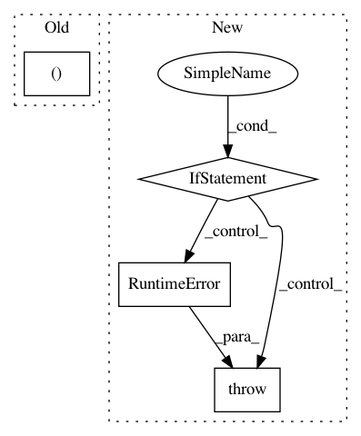

9267d77a87ac5d6736953f4822deab36b20945c7,nlp_architect/models/absa/inference/inference.py,SentimentInference,run_multiple,#SentimentInference#Any#Any#Any#,101
Before Change
raise NotImplementedError("BIST multithreading not implemented.")
if data_name:
dir_name = data_name
elif isinstance(docs, (list, GeneratorType)):
dir_name = "unnamed_data"
else:
dir_name = Path(docs).stem
After Change
def run_multiple(self, data: Union[str, PathLike] = None, parsed_data: Union[str, PathLike] = None,
out_dir: Union[str, PathLike] = INFERENCE_OUT):
if not parsed_data:
if not self.parser:
raise RuntimeError("Parser not initialized (try parse=True at init)")
parsed_dir = Path(out_dir) / "parsed" / Path(data).stem
parsed_data = self.parse_data(data, out_dir=parsed_dir)
sentiment_docs = {}
for f, parsed_doc in tqdm(_load_parsed_docs_from_dir(out_dir)):
sentiment_doc = self.run(parsed_doc=parsed_doc)
sentiment_docs[f] = sentiment_doc
In pattern: SUPERPATTERN
Frequency: 3
Non-data size: 4
Instances
Project Name: NervanaSystems/nlp-architect
Commit Name: 9267d77a87ac5d6736953f4822deab36b20945c7
Time: 2020-09-22
Author: daniel.korat@intel.com
File Name: nlp_architect/models/absa/inference/inference.py
Class Name: SentimentInference
Method Name: run_multiple
Project Name: tensorlayer/tensorlayer
Commit Name: 2e0f0929df4b01b269962a6423d6cb78b6d3da17
Time: 2018-12-04
Author: dhsig552@163.com
File Name: tensorlayer/layers/inputs.py
Class Name: EmbeddingInput
Method Name: __init__
Project Name: microsoft/nni
Commit Name: 192a807b39bc029c273c2d1349fb73850ed9484c
Time: 2020-12-13
Author: Quanlu.Zhang@microsoft.com
File Name: nni/retiarii/converter/graph_gen.py
Class Name:
Method Name: convert_module